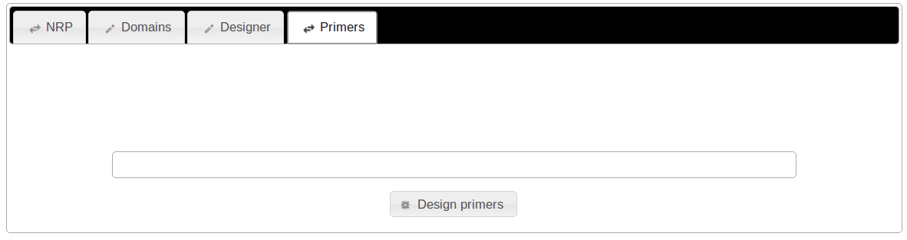

{% block content %}
Computer aided design of fully synthetic NRPS determined to produce a user-defined short peptide
Optimal domain assembly based on evolutionary distance
The curated database stores information of a plethora of Domains encoded on DNA sequences
Automated domain recognition for newly entered NRPS sequences
Integration of Gibthon to facilitate implementation of cloning strategy
Parts registry interface and SBOL output format
RFC100 for non-ribosomal peptide synthesis design


 {% endblock %}
{% endblock %}
{% block dialog %}
{% endblock %}
{% extends "base.html" %}
{% load staticfiles %}
{% block css-include %}
{% endblock %}
{% block js-include %}
{% endblock %}
{% block content %}
{% endblock %}
NRPSDesigner Docs
Welcome to the documentation of the NRPSDesigner. All the features, as well as detailed description of how to access them will be described here.
Features
Workflow
Workflow
Novel NRPS
Input
Output
Cloning strategy
The previously mentioned step comprise the core functionality of the NRPSDesigner: The calculation of appropriate DNA sequences and their source, which after assembly and transformation will lead to the production of a non-ribosomal peptide of choice. Thus, the subsequent steps can range from direct synthesis to diverse cloning techniques, such as Golden Gate, CPEC or Gibson assembly.
In fact, it is highly encouraged to use your own tool for CAD DNA design and assembly for the next steps, for example commercial offerings such as teselagen's platform or J5 . Nevertheless, here we already provide an in-built solution for the CAD DNA assembly, namely Gibthon.
About Gibthon
Gibthon was started as the software project of the Cambridge iGEM teams of 2010 and 2011 and comprises an open source tool which aids "in the design and manufacture of synthetic parts and devices for biological systems." The manufacture of the synthetic parts is accomplished by means of Gibson assembly, a technique for one-pot isothermal and scarless assembly of DNA fragments. Gibthon was chosen because of its user-friendly interface, which rapidly allows the scientist to use his expertise and modify the Gibson assembly primer suggestions by having direct access to the sequences the primer is complementary too. After each such modification, important primer properties, e.g. regarding self-priming are recalculated using UNAfold. In the next sections, the modified version of Gibthon for integration with the NRPSDesigner and its use will be explained.
Fragment library
Plasmid view #2
Output
Primers
If you click on the "Primers" tab, you will initially come upon the following:
Clicking on "Process primers", will calculate appropriate primers, as seen on the next screenshot:
In particular, the generated overview of the primers, includes a graphical display of the fragments to be assembled and the corresponding primers. For each of these, the visual representation shows to which fragment the annealing sequence of the primer binds to and to which fragment the Gibson overhang is complementary to. In addition, a small table which summarizes all the primers, their length and their melting temperature (annealing end, whole primer). In the example above, 8 primers have been generated, corresponding to the 4 fragments (3 NRPS sequences, 1 backbone).
Also note, that the graphical representation of the primers, can include a number (inside a red box). This numbers corresponds to the number of the following types of warnings:
- Tm warning: the annealing temperature of either the annealing portion or the whole primer is less than the target
- Self prime warning: the primer could potentially prime to itself on the 3' end
- Misprime warning: the primer could potentially prime elsewhere on the fragment
The last two warning are actually calculated by UNAfold.
For more information about a specific primer, one can click on it (in the graphical representation), as exemplified in the following screenshot:
Note that the primer specific view includes the sequence of the Primer, as well as a graphical representation of the primer and the two corresponding DNA sequences: The DNA sequence which gets amplified with PCR due to the 3' sticky end of the primer, as well as the sequence which will be combined with the aforementioned one during Gibson assembly. The view also includes a detailed description of all the warnings and a boxplot generated by UNAfold (see next section). Clicking on a particular base pair of the DNA sequences on the graphical view, will save the primer with the new length and the warnings and melting temperature will be recalculated.
Boxplot
A sample self-priming boxplot is shown above. This is the output of the folding program used to determine whether any self annealing will occur. Each mark on the plot represents a possible basepairing. The colour determines the likelyhood of pairing forming.
Black represents the lowest free energy, followed by red, green, and yellow. The lower the free energy, the more likely the structure is to form. As a general rule of thumb, if it is positive, it will be fine. If it is greater than ~-3kcal/mol, it will probably be OK. Any lower than this and, depending on position, you will probably want to consider redesigning your primers.
The right hand side of the plot corresponds to the 3' end of the primer. If there are any marks on this column, then the 3' end may be bound to another part of the primer. This will prevent extension of the primer along the target fragemnt. Note that the boxplot auto-scales to fit the provided data, so make sure you compare the number in the top right with the length of your primer.
This boxplot has a number of potential secondary structures forming. However, the most likely to form (at 22 bp from the 5' end) still has quite a high free energy, and due to its position is unlikely to affect the ability of the 3' end to extend. The original primer was 40bp long, so the secondary structure forming at 39bp from the 5' end does not includ= the 3' base pair. It is also a much higher free energy, and so is very unlikely to appear.